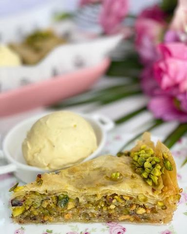

Baklava sa pistaćima

Moja beleška
SačuvanoNeko bi rekao kraljica među slatkišima, ja kažem da mi je ovo parče tako trebalo danas. 🙈 Muž kaže zauzela vrh liste svih poslastica koje sam pripremila , a gosti, oni ovog puta nisu stigli da probaju 😅 Nestala je pre vremena ☺️☺️☺️ Sa kuglom sladoleda od vanile, ma ne smem da pričam 🙈🙈🙈
Sastojci
- Izvolite recept
- Sirup
Priprema
Ovo je manja baklavica, čisto da zadovolji želju , pa ako planirate pripremu za drustvance, slobodno možete da duplirate meru 🤗 Kore za pocetak isecite prema dimenziji kalupa (moj je prečnika 22 cm), potreban vam je otopljen puter i sitno seckani pistać. Prve tri kore premazujete samo puterom, potom posipate preko ostalih do sredine i po punu kašiku seckanog pistaća. Na sredini pospite veću količinu seckanih pistaća kako bi kasnije mogli tu lepo da podelite baklavu i pri serviranju dodate kuglu sladoleda od vanile ☺️ Nastavite do poslednje tri kore da premazujete puter i posipate po kašiku pistaća. Poslednje tri kao na početku premazujete samo puterom. Pre pečenja isecite baklavu kako zelite. Pa je jednom sačuvanom korom samo zaštitite kako ne bi previše porumenela prilikom pečenja. Posle nekih 10 ak minuta u rerni, slobodno je možete skloniti. U zagrejanoj rerni na 180C peče se 20ak minuta, a vi za to vreme pripremate sirup. Na laganijoj vatri potpuno otopite šećer u vodi, pa kada krene da krčka dodajte kriške limuna i od tog trenutka kuvajte još nekih 6,7 minuta. Potom sirup potpuno ohladite i onda ga prelijete preko vrele baklave. Sad budite karakter i baklavu ostavite da se potpuno ohladi, upije sirup, smestite je u frižider, a sutradan tek degustacija 🙈 Ko bi voleo parčence..? Lep dan vam želim 🤎
Originalni opis sa Instagrama
Baklava sa pistaćima 🌸 Neko bi rekao kraljica među slatkišima, ja kažem da mi je ovo parče tako trebalo danas. 🙈 Muž kaže zauzela vrh liste svih poslastica koje sam pripremila , a gosti, oni ovog puta nisu stigli da probaju 😅 Nestala je pre vremena ☺️☺️☺️ Sa kuglom sladoleda od vanile, ma ne smem da pričam 🙈🙈🙈 Izvolite recept: •300 gr kora za baklavu •200 gr otopljenog putera •200 gr pistaća Sirup: •400 gr šećera •200 ml vode •nekoliko kriški 🍋 Ovo je manja baklavica, čisto da zadovolji želju , pa ako planirate pripremu za drustvance, slobodno možete da duplirate meru 🤗 Kore za pocetak isecite prema dimenziji kalupa (moj je prečnika 22 cm), potreban vam je otopljen puter i sitno seckani pistać. Prve tri kore premazujete samo puterom, potom posipate preko ostalih do sredine i po punu kašiku seckanog pistaća. Na sredini pospite veću količinu seckanih pistaća kako bi kasnije mogli tu lepo da podelite baklavu i pri serviranju dodate kuglu sladoleda od vanile ☺️ Nastavite do poslednje tri kore da premazujete puter i posipate po kašiku pistaća. Poslednje tri kao na početku premazujete samo puterom. Pre pečenja isecite baklavu kako zelite. Pa je jednom sačuvanom korom samo zaštitite kako ne bi previše porumenela prilikom pečenja. Posle nekih 10 ak minuta u rerni, slobodno je možete skloniti. U zagrejanoj rerni na 180C peče se 20ak minuta, a vi za to vreme pripremate sirup. Na laganijoj vatri potpuno otopite šećer u vodi, pa kada krene da krčka dodajte kriške limuna i od tog trenutka kuvajte još nekih 6,7 minuta. Potom sirup potpuno ohladite i onda ga prelijete preko vrele baklave. Sad budite karakter i baklavu ostavite da se potpuno ohladi, upije sirup, smestite je u frižider, a sutradan tek degustacija 🙈 Ko bi voleo parčence..? Lep dan vam želim 🤎 • • • #baklavasapistacima #baklavasapistaćima #baklava #dezert #idejezadezert #domacikolaci #poslastica #slatkisi #mojirecepti #pistacchio #pistachos #turkiyebaklavasi #turskabaklava #mojirecepti